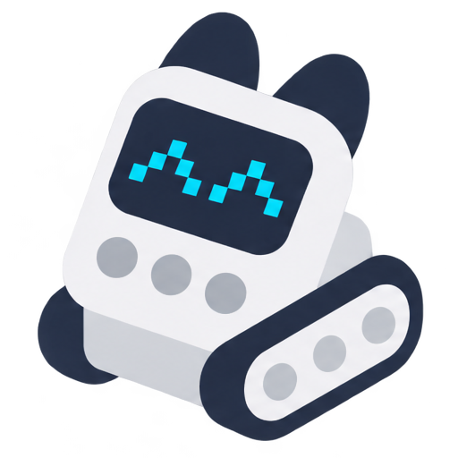
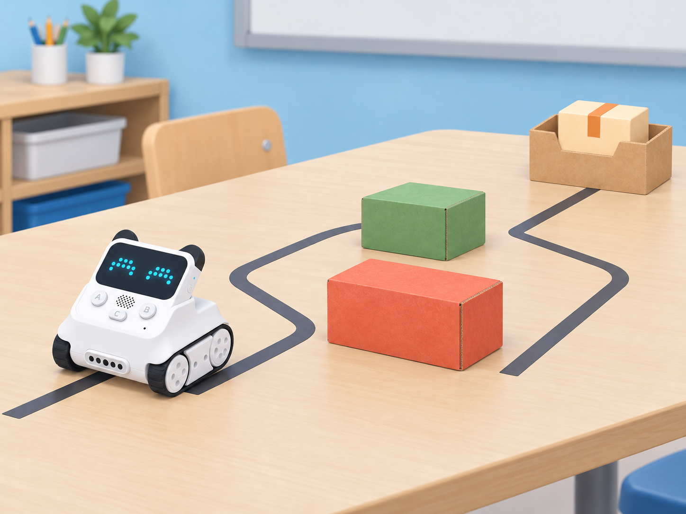

Codey Rocky Segon cicle Matemàtiques i Tecnologia ⏱️ 4 sessionsRepartiment amb una ruta segura
🏷️ Entorn i mobilitat
🌱 Situació, repte i intenció
🎯 Aprenentatges i vocabulari
- Descompondre una tasca de repartiment fictícia en entrada, decisió, gir i continuació.
- Programar una resposta amb els components de Codey Rocky que s’han comprovat al centre.
- Comparar els resultats de diversos intents i revisar una regla davant d’una detecció incorrecta.
- Explicar per què un prototip escolar no és un sistema autònom segur per a un espai públic.
🧰 Materials i preparació
Verifiqueu que el sensor IR/color està muntat i orientat cap endavant, que el programa mBlock 5 el pot llegir i que la bateria permet proves curtes. Manteniu velocitat baixa, pista delimitada sobre una taula gran o al terra llis, obstacles lleugers i supervisió directa. No proveu prop d’escales, persones en moviment, animals, objectes fràgils o accessos de pas. L’infraroig pot no detectar materials o angles diversos; una absència de detecció no significa que el camí estiga lliure.
📅 Seqüència didàctica
Dissenyem el mapa de repartiment (45 min)
Fase 1 · Activem i prediem
Dibuixeu una pista tancada i estable amb un punt de càrrega, una parada i una destinació. Marqueu distàncies amb unitats de paper, trams rectes i punts possibles de gir. Predigueu quines accions necessitaria Codey Rocky per seguir la ruta.
Fase 2 · Explorem i construïm
Traceu una ruta en el plànol i col·loqueu una capsa lleugera de paper com a símbol del paquet. No la fixeu damunt del robot si pot tapar el sensor o desestabilitzar-lo. Identifiqueu dos riscos potencials de la maqueta.
Fase 3 · Expliquem i registrem
Definiu què vol dir «obstacle» dins del model i anoteu quina informació el robot no pot donar: si una persona vol travessar, si una zona és privada o si el paquet ha arribat a una persona concreta.
Fase 4 · Apliquem i millorem
Reviseu el recorregut i amplieu les zones de gir si cal. Afegiu punts d’aturada clars abans de moure el robot.
Fase 5 · Comprovem i reflexionem
Expliqueu què pot fer el robot amb una detecció i quina decisió continua sent humana.
Establim una línia base (45 min)
Fase 1 · Activem i prediem
Comproveu el Codey Rocky i l’entorn mBlock 5. Orienteu cap endavant el sensor IR/color integrat segons les instruccions del fabricant; no afegiu sensors aliens a la dotació. Predigueu on acabarà el robot en una prova sense obstacles.
Fase 2 · Explorem i construïm
Creeu un programa curt que inicie el moviment amb el botó A i el pare amb una acció accessible o supervisada. Feu-lo circular sense obstacle, a baixa velocitat, en una pista tancada i lliure.
Fase 3 · Expliquem i registrem
Marqueu el punt d’inici, el temps aproximat i el lloc final. Repetiu la mateixa ruta tres vegades i compareu els resultats, mantenint superfície, bateria, velocitat i posició inicial.
Fase 4 · Apliquem i millorem
Si la desviació és gran, comproveu superfície, bateria, velocitat i posició abans de canviar el codi. Repetiu el protocol després de corregir una condició.
Fase 5 · Comprovem i reflexionem
Descriviu la variabilitat que s’ha observat i indiqueu quines condicions s’han mantingut igual.
Provem una condició davant d’obstacles (45 min)
Fase 1 · Activem i prediem
Trieu un obstacle gran, tou, estable i visible per al sensor, com una paret baixa de cartró. Predigueu què farà el robot quan el detecte i recordeu que la direcció aleatòria no garanteix arribar a una destinació.
Fase 2 · Explorem i construïm
Afegiu una condició: quan el sensor detecta l’obstacle, el robot tria un gir a esquerra o dreta i després reprén l’avanç. Feu primer una demostració d’una sola detecció i manteniu les mans fora de la ruta mentre el motor està actiu.
Fase 3 · Expliquem i registrem
Canvieu una variable cada vegada —posició de l’obstacle, angle o distància inicial— i anoteu configuració, resposta esperada, resposta real i incidència. Incloeu casos sense detecció o amb una reacció massa prompte; no els oculteu ni els atribuïu a negligència de qui programa.
Fase 4 · Apliquem i millorem
Reviseu una condició i torneu a provar la mateixa situació. Si varia l’obstacle, manteniu el registre dels intents perquè es puga comparar cada resultat.
Fase 5 · Comprovem i reflexionem
Identifiqueu quina prova mostra que el sensor pot fallar i què caldria fer si hi haguera una persona.
Revisem el servei i comuniquem els límits (45 min)
Fase 1 · Activem i prediem
Ajusteu el recorregut perquè tinga una zona de gir ampla i cap eixida a terra. Predigueu quines fallades requeririen una intervenció humana.
Fase 2 · Explorem i construïm
Una altra parella executa el mateix protocol sense rebre l’explicació prèvia i comprova si pot reproduir la prova. Manteniu supervisió directa i obstacle triat pel docent.
Fase 3 · Expliquem i registrem
Prepareu una presentació amb mapa, dades i una afirmació prudent, com ara «en dues de tres proves ha detectat aquesta paret de cartró a aquesta distància». Separeu l’observació del que no es pot concloure.
Fase 4 · Apliquem i millorem
Reviseu el programa o el protocol si l’altra parella no pot reproduir la prova. Afegiu un cartell d’ús: pista tancada, velocitat baixa i supervisió; no és un vehicle segur per a lliuraments reals.
Fase 5 · Comprovem i reflexionem
Presenteu la recomanació per a la persona supervisora i expliqueu què les dades permeten afirmar i què no es pot prometre sobre un robot real.
🧪 Evidències i avaluació
Recolliu el plànol, el programa amb comentaris, tres proves de línia base, les observacions amb obstacle i la recomanació final. Observeu si l’alumnat:
- descriu ruta i instruccions abans de moure el robot;
- identifica la condició que activa la resposta i anticipa què hauria de passar;
- separa una detecció correcta d’una falsa alarma o d’un obstacle no detectat;
- canvia una variable a la vegada i usa resultats per depurar;
- explica per què cal supervisió humana i quins límits té el prototip.
Valoreu la qualitat del protocol i la interpretació honesta, no que el robot complete sempre la ruta.
♿ Participació, accessibilitat i seguretat
Permeteu dissenyar el recorregut en paper abans de manipular el robot i assigneu rols rotatius de planificació, programació, observació, registre i seguretat. Una ruta curta, una ordre per targeta o la lectura en veu alta faciliten la participació sense reduir el repte de raonament. Oferiu taules amb pictogrames per registrar resultats i deixeu que una persona dicte instruccions mentre una altra opera el robot. Qualsevol participant pot optar per observar les proves a una distància còmoda.
🔗 Referents i adaptació
Hem pres com a punt de partida Case 18: Codey Rocky avoids obstacles. Aquesta situació és una proposta pròpia amb context, seqüència i materials verificables per al centre; no reprodueix ni substitueix el material oficial. Comproveu sempre el model de robot i els accessoris disponibles.